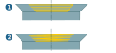

Parameters
Machining area / Hole security
Top offset: (1) Offset for the start of machining.
Offset bottom: (2) Remaining material on the bottom of the hole.
Absolute top / Absolut bottom: The defined absolute values are considered in each case. This facilitates simple machining if the drill hole(s) must be made before the material removal (of the stock model).
Break through length: (3) Extends the toolpath in the axial direction. In the case of a through hole, approach must continue by this value to ensure that no burring occurs.
Clearance distance: (4) Axial distance of the tool to the top of the drill hole during the approach. The approach takes place as a rapid movement up to the Clearance distance. The tool moves at the feedrate between the clearance distance and top of the drill hole.
Retract distance: (5) Axial distance of the tool to the top of the drill hole during retraction as a rapid movement.
 |
Machining parameters
Roughing: The machining is carried out as helical roughing.
Roughing and finishing: If a final helical finishing step is to be carried out, the Roughing and finishing function must be activated.
Pitch roughing: (1) Define the pitch for roughing. If the drilling depth is not an integer multiple of the Pitch roughing the starting point of the helical movement is above the defined drilling geometry and the value of the surface is corrected.
Pitch finishing: (2) Define the pitch for the final finishing operation.
Finishing direction: Finishing can take place from Top to bottom or from Bottom to top.
Allowance / Groove
Roughing allowance XY (3): Material remaining on the hole wall during roughing. The roughing allowance must be greater than the finishing allowance.
Finishing allowance XY (4): material remaining on the hole wall during finishing. Only applies if the finishing step has been activated.
Groove depth (5): Pay attention to the tool dimensions when defining the groove depth.
Chamfer
Chamfer height (6): Height of the chamfer on surface of the hole.
Chamfer angle (7): Values between 0 and 89.99° are advisable.
Stepdown chamfering (8): stepdown in Z direction when machining the chamfer.
 |
Direction: The machining of the chamfer can be done Top to bottom or Bottom to top.
Prefer spiral: Activate if the infeed in the chamfer of the hole is to take place in a spiral. (1) Function not activated, (2) Function activated.
|  |
Cutting mode
For tools with a spindle orientation Clockwise applies: select the Conventional milling option for clockwise machining and the Climb milling option for counter-clockwise machining.
For tools with a spindle orientation Counter clockwise applies: select the Climb milling option for clockwise machining and the Conventional milling option for counter-clockwise machining.
Path compensation
Center path: hyperMILL calculates a toolpath that can be machined using the specified tool without collisions. Select this function if your controller does not offer the path compensation feature.
Path compensation: Enable if repointed tools are to be used.